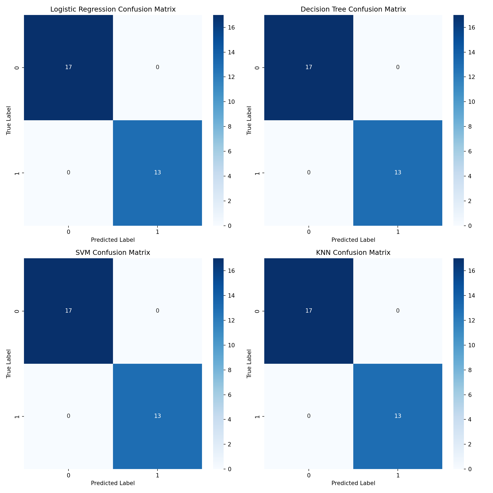

import numpy as np
import matplotlib.pyplot as plt
import seaborn as sns
from sklearn.datasets import load_iris
from sklearn.model_selection import train_test_split
from sklearn.metrics import confusion_matrix, accuracy_score
from sklearn.linear_model import LogisticRegression
from sklearn.tree import DecisionTreeClassifier
from sklearn.svm import SVC
from sklearn.neighbors import KNeighborsClassifier
# Load Iris dataset
iris = load_iris()
X = iris.data
y = iris.target
# For simplicity, using only two classes
X, y = X[y != 2], y[y != 2]
# Split the data into training and test sets
X_train, X_test, y_train, y_test = train_test_split(X, y, test_size=0.3, random_state=42)
# Logistic Regression Classifier
clf_lr = LogisticRegression()
clf_lr.fit(X_train, y_train)LogisticRegression()In a Jupyter environment, please rerun this cell to show the HTML representation or trust the notebook.
On GitHub, the HTML representation is unable to render, please try loading this page with nbviewer.org.
LogisticRegression()
y_pred_lr = clf_lr.predict(X_test)
cm_lr = confusion_matrix(y_test, y_pred_lr)
accuracy_lr = accuracy_score(y_test, y_pred_lr)
# Decision Tree Classifier
clf_dt = DecisionTreeClassifier()
clf_dt.fit(X_train, y_train)DecisionTreeClassifier()In a Jupyter environment, please rerun this cell to show the HTML representation or trust the notebook.
On GitHub, the HTML representation is unable to render, please try loading this page with nbviewer.org.
DecisionTreeClassifier()
y_pred_dt = clf_dt.predict(X_test)
cm_dt = confusion_matrix(y_test, y_pred_dt)
accuracy_dt = accuracy_score(y_test, y_pred_dt)
# SVM Classifier
clf_svm = SVC(probability=True)
clf_svm.fit(X_train, y_train)SVC(probability=True)In a Jupyter environment, please rerun this cell to show the HTML representation or trust the notebook.
On GitHub, the HTML representation is unable to render, please try loading this page with nbviewer.org.
SVC(probability=True)
y_pred_svm = clf_svm.predict(X_test)
cm_svm = confusion_matrix(y_test, y_pred_svm)
accuracy_svm = accuracy_score(y_test, y_pred_svm)
# KNN Classifier
clf_knn = KNeighborsClassifier(n_neighbors=3)
clf_knn.fit(X_train, y_train)KNeighborsClassifier(n_neighbors=3)In a Jupyter environment, please rerun this cell to show the HTML representation or trust the notebook.
On GitHub, the HTML representation is unable to render, please try loading this page with nbviewer.org.
KNeighborsClassifier(n_neighbors=3)
y_pred_knn = clf_knn.predict(X_test)
cm_knn = confusion_matrix(y_test, y_pred_knn)
accuracy_knn = accuracy_score(y_test, y_pred_knn)
# Plotting Confusion Matrices for all classifiers
fig, axes = plt.subplots(2, 2, figsize=(12, 12))
# Logistic Regression
sns.heatmap(cm_lr, annot=True, fmt="d", cmap="Blues", ax=axes[0, 0])
axes[0, 0].set_title('Logistic Regression Confusion Matrix')
axes[0, 0].set_xlabel('Predicted Label')
axes[0, 0].set_ylabel('True Label')
# Decision Tree
sns.heatmap(cm_dt, annot=True, fmt="d", cmap="Blues", ax=axes[0, 1])
axes[0, 1].set_title('Decision Tree Confusion Matrix')
axes[0, 1].set_xlabel('Predicted Label')
axes[0, 1].set_ylabel('True Label')
# SVM
sns.heatmap(cm_svm, annot=True, fmt="d", cmap="Blues", ax=axes[1, 0])
axes[1, 0].set_title('SVM Confusion Matrix')
axes[1, 0].set_xlabel('Predicted Label')
axes[1, 0].set_ylabel('True Label')
# KNN
sns.heatmap(cm_knn, annot=True, fmt="d", cmap="Blues", ax=axes[1, 1])
axes[1, 1].set_title('KNN Confusion Matrix')
axes[1, 1].set_xlabel('Predicted Label')
axes[1, 1].set_ylabel('True Label')
plt.tight_layout()
plt.show()
# Printing accuracies
print("Accuracy of Logistic Regression: {:.2f}%".format(accuracy_lr * 100))Accuracy of Logistic Regression: 100.00%print("Accuracy of Decision Tree: {:.2f}%".format(accuracy_dt * 100))Accuracy of Decision Tree: 100.00%print("Accuracy of SVM: {:.2f}%".format(accuracy_svm * 100))Accuracy of SVM: 100.00%print("Accuracy of KNN: {:.2f}%".format(accuracy_knn * 100))Accuracy of KNN: 100.00%